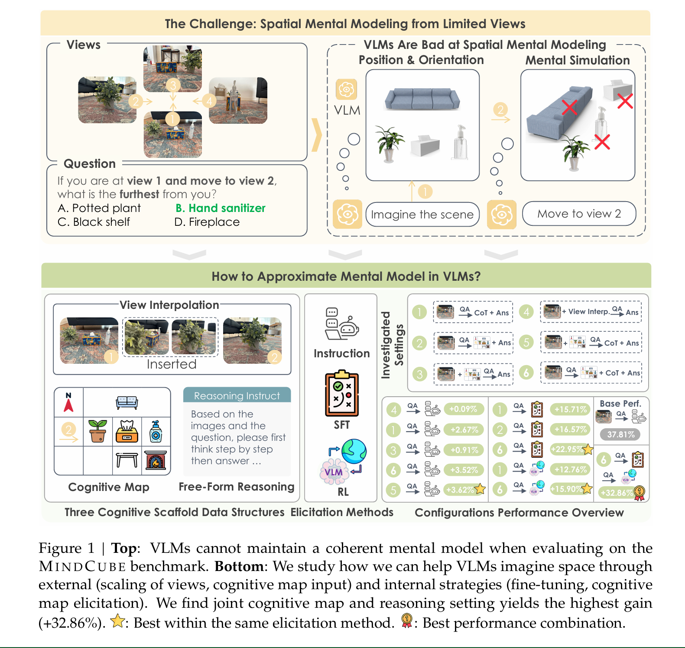
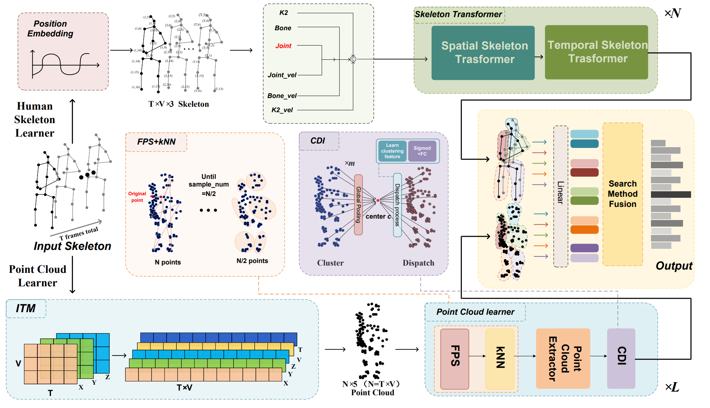

|
Baiqiao Yin Hi there! I'm Baiqiao Yin(尹柏乔). Now I'm a research intern at Northwestern University, very fortunate to work with Manling Li and collaborate with Stanford SVL. I got my B.Eng. in Intelligent Science and Technology from Sun Yat-sen University, where I worked closely with Xiaodan Liang. In the near future, I'll go to New York University to serve as a research assistant in my gap year, working closely with Chen Feng. I am open for discussions and looking for PhD opportunities (26 Fall). If you think there is anything interesting we can discuss, feel free to email me! |

|
Internships
|
ResearchMy research interests lie in in spatial intelligence. Now I focus on designing spatial intelligence agent with the abilities for spatial perception&awareness, active interaction, mental maniputation and dynamic spatial understanding. |
|

|
Spatial Mental Modeling from Limited Views
Baiqiao Yin, Qineng Wang, Pingyue Zhang, Jianshu Zhang, Kangrui Wang, Zihan Wang, Jieyu Zhang, Keshigeyan Chandrasegaran, Han Liu Ranjay Krishna Saining Xie Manling Li Jiajun Wu Li Fei-Fei arXiv, 2025 project page / arXiv Key Takeaway: Guiding VLMs to first generate cognitive maps, then reason upon them, is an effective approach to approximate spatial mental modeling with limited views. |
|

|
Skeleton2Point: Recognizing Skeleton-Based Actions as Point Clouds
Baiqiao Yin, Jiaying Lin, Jiajun Wen, Yue Li, Jinfu Liu, Yanfei Wang, Mengyuan Liu IROS, 2025 project page / paper Regard skeleton joints as point cloud via incorporating the position information of skeletons into point cloud methods, demonstrating the validity of modeling position relationships with 3D coordinates. |

|
TheaterGen: Character Management with LLM for Consistent Multi-turn Image Generation
Junhao Cheng, Baiqiao Yin, Kaixin Cai, Minbin Huang, Hanhui Li, Yuxin He, Xi Lu, Yue Li, Yifei Li, Yiqiang Yan, Xiaodan Liang/a> IROS, 2025 project page / arxiv Theatergen can interact with users to consistently generate images over multiple Turns. |